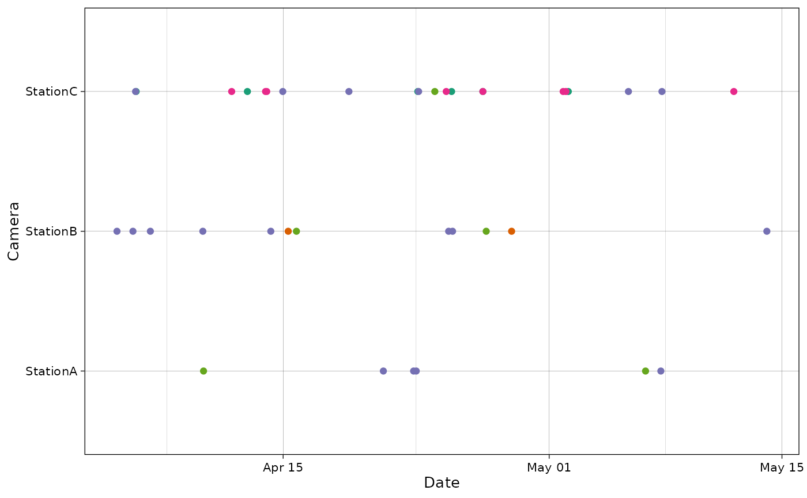

Plots
plots.RmdThis vignette demonstrates hogitw this package can be used to plot camera trap data.
Import and prepare data
recordTableSample$DateTimeOriginal <- as.POSIXct(recordTableSample$DateTimeOriginal)
recordTableSample$Date <- as.Date(recordTableSample$Date)
recordTableSample$Time <- chron::times(recordTableSample$Time)
camtraps$Setup_date <- as.Date(camtraps$Setup_date, format = "%d/%m/%Y")
camtraps$Retrieval_date <- as.Date(camtraps$Retrieval_date, format = "%d/%m/%Y")Plot observations
The package provides a function to plot the observations for each camera.
plot_points(recordTableSample,
camera_col = "Station", spp_col = "Species",
date_col = "Date", time_col = "Time")
If a timestamp_col is present, it can also be used.
plot_points(recordTableSample,
camera_col = "Station", spp_col = "Species",
timestamp_col = "DateTimeOriginal")
Plot cameras
The package also provides a function to plot the cameras with Leaflet.
Here, the dataset is already projected using the UTM zone 50 (East Asia)/ Therefore, we provide the EPSG code to use (EPSG:32650).
plot_map(camtraps,
cam_col = "Station",
lat_col = "utm_y", lon_col = "utm_x",
crs = 32650)Plot species
The package also includes a simple function to plot species counts.
plot_species_bars(recordTableSample,
spp_col = "Species")
If there is a count column, it can also be included.
with_count <- recordTableSample |>
mutate(count = 2)
plot_species_bars(with_count,
spp_col = "Species", count_col = "count")
Finally, if there is an observation type column, NA
values in the species column will be replaced with the values in
observation type.
with_obstype <- recordTableSample |>
mutate(type = "animal")
with_obstype <- rbind(with_obstype,
c(rep(NA, 11), "human"))
plot_species_bars(with_obstype,
spp_col = "Species", obs_col = "type")